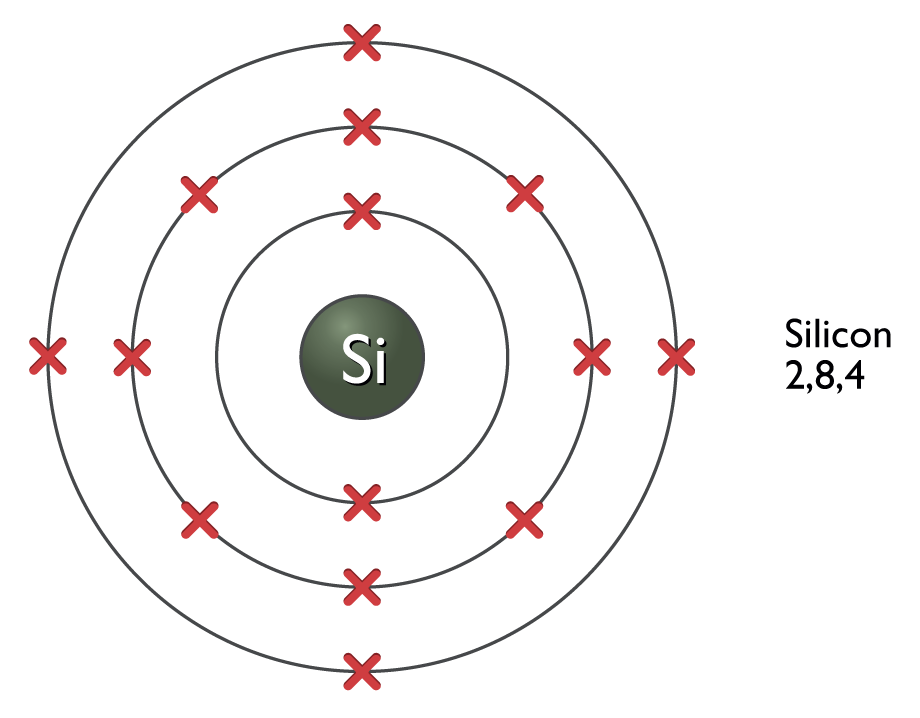
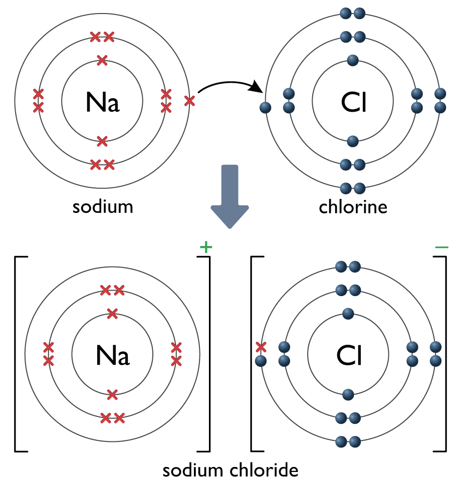
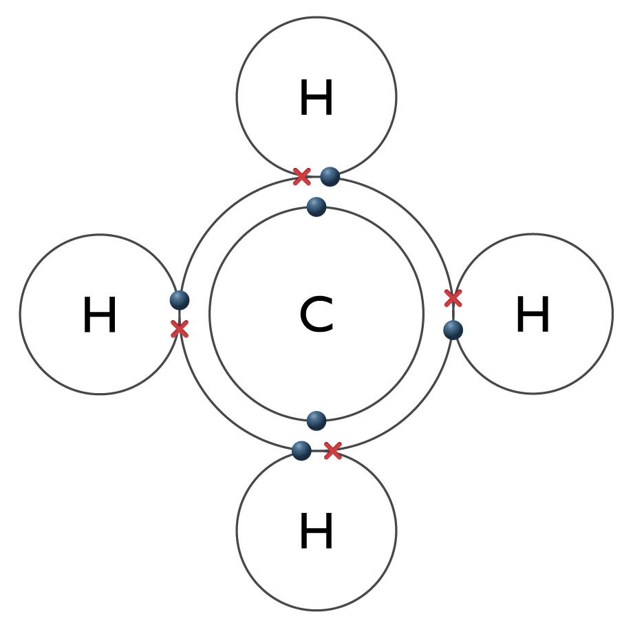

Everything around us, including invisible things like the air, is made of atoms. Substances that only contain one type of atom are called elements; there are less than 100 natural elements on Earth.
The atoms of many different elements can combine together in different ways. This is why there are millions of substances on Earth. Substances that combine more than one type of atom are called compounds.
Haematite is a compound that contains large quantities of iron ore (see Section 11.1). It is a form of iron oxide: it contains the atoms of two different elements
Atomic structure and electron shells
All atoms contain protons and electrons. They also contain neutrons, except the most common form of hydrogen, which only has 1 proton and 1 electron.
There are the same number of protons and electrons in a single atom. Protons have a charge +1 and electrons –1. Neutrons have no charge, 0. Overall these cancel each other out in a single atom; an atom’s overall charge is 0.
Protons and neutrons form the nucleus of an atom. The number of protons in an atom’s nucleus is its atomic number.
Electrons surround the nucleus at different energy levels, which are often represented as ‘shells’. The 1st shell contains up to 2 electrons; the 2nd and 3rd shells contain up to 18.

Silicon has 14 electrons. It fills the first two shells completely with 2 and 8 electrons each, leaving 4 in the third shell
The electronic structure of an atom is a shorthand way of describing the arrangement of its electrons, e.g. sodium (Na) has 11 electrons, hence 2,8,1.
The Periodic Table
The Periodic Table was invented to show essential information about the elements. Each element has a symbol (e.g. Cu) and is arranged in order of its atomic number (Cu = 29. Copper has 29 protons and 29 electrons).
The vertical columns of the Periodic Table are the groups. The elements of each group all have similar properties. The thick zigzag line on the right of the Table divides metals (left) from non-metals (right).
There are 8 groups from left to right, numbered 1 to 7, then group 0. Each group’s number is the same as the number of electrons in the outer shell of each element in that group. So Group 2 elements (e.g. Mg, Ca) have two electrons in their outer shell.
Sometimes the Periodic Table also shows the mass number of elements: this is the total protons plus neutrons in an element. Knowing an element’s mass number and atomic number, we can calculate the number of neutrons it has, e.g. N (nitrogen) = 14 (mass number) minus 7 (atomic number) = 7 (neutrons).
Group 1, the ‘alkali metals’: These are highly reactive when combined with water or oxygen. They may fizz violently in water and lose their shine when exposed to oxygen (oxidation). To maintain their pure state they are kept under oil. To maintain their pure state they are kept under oil.
sodium + water ⇒
sodium hydroxide + hydrogen
Sodium exposed to air begins to lose its shine as it reacts with oxygen in the air
Group 0 Elements: These are called ‘noble gases’ and have 8 electrons in their outer energy shell, except helium (He) which has 2.
Bonds and compounds
Bonds hold atoms together. Atoms either share electrons or transfer electrons to form bonds. Two or more atoms bonded together may form a molecule (e.g. O2), a compound (e.g. NaCl), or an ion (e.g. OH–).
Compounds are formed from ionic bonds between metals and non-metals. Electrons are transferred from one atom to another in this type of bond. One atom gains one or more electrons and one atom loses one or more electrons:

Ionic bonding in a compound of sodium chloride
Molecules are formed from covalent bonds between atoms that are non-metals (e.g. methane, CH4). Each bond consists of shared electrons in overlaps of the atoms’ outer shells:

Covalent bonding in a molecule of methane
Ions are formed when metals react with non-metals. Metal ions always have a positive charge and non-metal ions always have a negative charge.
Ions in a compound attract each other and make its overall charge zero: Na+Cl–, Mg2+O2-. A compound’s chemical formula shows the lowest number of ions that make a neutral overall charge, e.g. CaCl2.